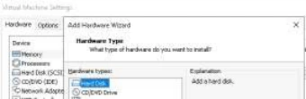
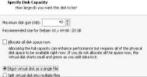
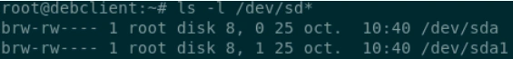
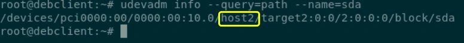
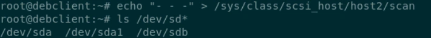
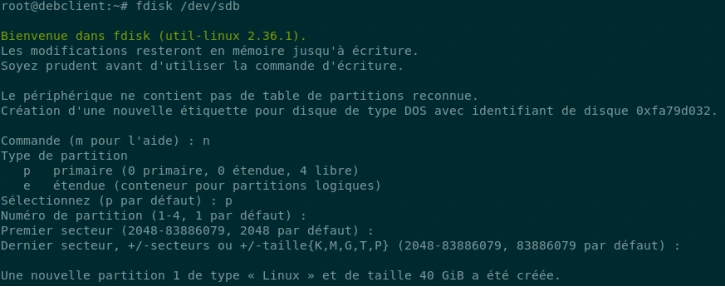
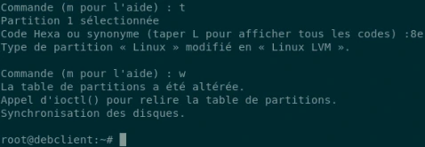
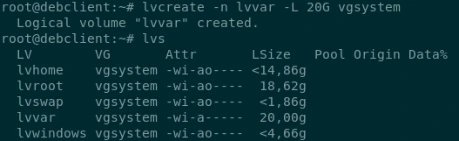
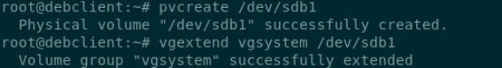
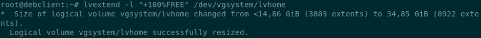

Transcription intégrale structurée du support et de ses instructions. La mise en forme est adaptée au Web ; les compléments pédagogiques restent dans leur onglet distinct.
TP du Module 08 – Gestion des espaces de stockage avancée - LVM
Avant de démarrer ce TP, il convient d’avoir suivi les vidéos des modules 1 à 8 et d’avoir réalisé les TP proposés.
Durée estimée
15 à 20 minutes
→ 1Depuis les paramètres de la VM, créer un nouveau disque, avec les options pas défaut.
Après l'ajout du disque, seul le disque d'origine est listé
En utilisant la commande indiquée en Astuce apparait le host qui gère les disques. Ici host2.
On force ensuite le scan en précisant le host2 indiqué à l’étape précédente



ls -l /dev/sd*
udevadm info --query=path --name=sda
/devices/pci0000:00/0000:00:10.0/host2/target2:0:0/2:0:0:0/block/sda
echo "- - -" > /sys/class/scsi_host/host2/scan
ls /dev/sd*Lancer fdisk sur /dev/sdb, n pour créer une nouvelle partition. Tous les choix par défaut
L’option t permet de modifier le type de partition en 8e pour “Linux LVM”.
pvcreate pour declarer la nouvelle partition comme Volume Physique utilisable pour LVM vgextend ajoute ce nouveau Volume Physique au Groupe de Volumes existant.
lvcreate avec l’option -n pour préciser le nom du volume logique
-L permet de préciser la taille du volume Ne pas oublier de préciser le nom du Groupe de Volume cible.
lvextend avec l’option -l suivi de l’argument “100%FREE” permet d’affecter l’espace libre au volume logique
Avec un LV existant, saisir le chemin complet /dev/<nomduVG>/<nomduLV> d



lvcreate -n lvvar -L 20G vgsystem
lvs
pvcreate /dev/sdb1
vgextend vgsystem /dev/sdb1
lvextend -l +100%FREE /dev/vgsystem/lvhome